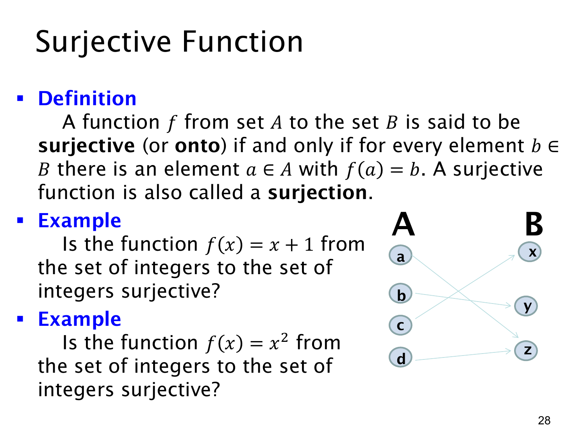

L1.4 · 第 28 页讲解原文
查看这一页课件

满射：陪域每个元素都被命中
函数 f:A→B 是满射（surjective，或 onto），当且仅当每个 b∈B 都有至少一个 a∈A 满足 f(a)=b：
∀b∈B∃a∈A(f(a)=b).
换句话说，函数的值域等于陪域：f(A)=B。满射允许不同输入取得同一输出，但不允许陪域里留下未被任何输入映到的元素。原页箭头图中，右侧的 x,y,z 都有箭头指入，而左侧有更多输入；它直观展示“覆盖全部右侧元素”，即使某些输出接收不止一个输入也不妨碍满射。
例一：f:Z→Z，f(x)=x+1。对任意目标整数 b，选输入 a=b−1；它仍是整数，而且 f(a)=(b−1)+1=b。因此每个整数都被命中，f 是满射。
例二：f:Z→Z，f(x)=x2。它不是满射。比如陪域中的整数 −1 没有任何整数原像，因为整数平方不可能为负。只要找到一个陪域元素没有原像，就足以否定满射。
满射判断与陪域的选择密切相关。同一平方规则若改以非负完全平方整数集为陪域，就会是满射；本页明确以全体整数 Z 为陪域，所以答案是否定的。单射检查“不同输入是否撞值”，满射检查“每个目标是否被覆盖”，两个条件不可混淆。